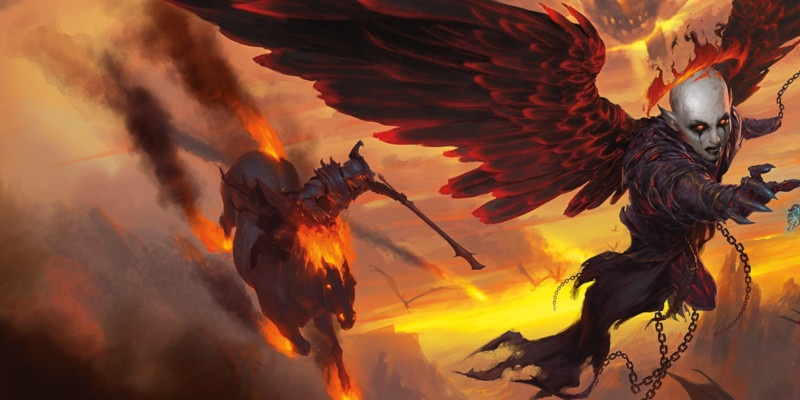

Lignées gothiques
Ce document présente trois nouvelles options de race pour les personnages joueurs :
- Dhampir
- Sang maudit
- Réincarné [Reborn]
Ces options sont spéciales ; vous pouvez en choisir une lors de la création du personnage ou à un moment approprié plus tard dans une campagne, transformant ainsi votre personnage.
Créer votre personnage
NOTE DE CONCEPTION
En 2020, le livre Tasha’s Cauldron of Everything a introduit la possibilité de personnaliser plusieurs des traits raciaux de votre personnage, en particulier le trait Augmentation de caractéristiques, le trait Langue et les traits qui confèrent la maîtrise de compétences, d'armures, d'armes ou d'outils.
Comme proposé dans ce livre, les options de race présentées ici et dans les futurs livres de D&D n'ont pas le trait Augmentation de caractéristiques, le trait Langue, le trait Alignement et tout autre trait purement culturel. Les traits raciaux ne reflètent désormais que les réalités physiques ou magiques d'un personnage joueur membre d'une lignée particulière. Ces traits incluent des choses comme la vision dans le noir, une arme de souffle (comme chez le drakéide) ou une capacité magique innée (comme pour le gnome des forêts). Ils n'incluent pas les caractéristiques culturelles, comme la langue ou la formation avec une arme ou un outil, ni les suggestions d'alignement, l'alignement étant un choix pour chaque individu et non pas une caractéristique partagée par toute une lignée.
Enfin, à partir de maintenant, le terme « race » dans D&D se réfère uniquement à un ensemble de capacités de jeu utilisées par les personnages joueurs. Ces capacités n'ont aucune incidence sur les monstres et les PNJ membres d'une même espèce ou d'une même lignée, car à D&D le fonctionnement des monstres et les PNJ ne dépend pas d'une race ou d'une classe. De plus, les MD sont habilités à personnaliser les caractéristiques des créatures de leur jeu comme ils le souhaitent.
Au niveau 1, vous choisissez si votre personnage est membre de la race humaine ou d'une des races fantastiques du jeu. Vous pouvez également choisir l'une des lignées suivantes. Si vous choisissez une lignée, vous avez peut-être déjà été membre d’une autre race, mais vous ne l’êtes plus. Vous ne possédez désormais que les traits raciaux de votre lignée. Lorsque vous créez un personnage en utilisant une des options de lignée présentées ici, suivez ces règles supplémentaires lors de la création du personnage.
Augmentation de caractéristiques
Lorsque vous déterminez vos valeurs de caractéristiques, augmentez une de ces valeurs de 2 et augmentez-en une autre de 1. Ces augmentations ne peuvent pas amener une valeur au-dessus de 20. Suivez cette règle quelle que soit la méthode que vous utilisez pour déterminer les caractéristiques (lancers de dés ou achat par points). Si vous remplacez votre race par une lignée, remplacez toutes les augmentations de caractéristiques que vous aviez précédemment par celles-ci.
Langues
Votre personnage peut parler, lire et écrire le commun et une autre langue que vous et votre MD reconnaissez comme appropriée pour le personnage. Le Manuel des Joueurs propose une liste de langues répandues parmi lesquelles choisir. Le MD est libre d'ajouter ou de supprimer des langues de cette liste pour une campagne particulière. Si vous remplacez votre race par une lignée, vous conservez toutes les langues que vous aviez et ne gagnez aucune nouvelle langue.
Type de créature
Chaque créature de D&D, y compris chaque personnage joueur, a une entrée spéciale dans les règles qui identifie son type de créature. La plupart des personnages joueurs sont de type humanoïde. Les options de lignées présentées ici indiquent de quel type de créature est votre personnage.
Liste des types. Voici une liste des types de créatures du jeu par ordre alphabétique : aberration, artificiel, bête, céleste, dragon, élémentaire, fée, fiélon, géant, humanoïde, monstruosité, mort-vivant, plante, vase. Ces types n'ont pas de règles spécifiques liées, mais certaines règles du jeu affectent les créatures de certains types de différentes manières. Par exemple, la description du sort soins spécifie que le sort ne fonctionne pas sur une créature de type créature artificielle ou mort-vivant.
Avoir plus d'un type. Certaines créatures appartiennent à plus d'un type de créature. Si un effet fonctionne sur au moins un des types d’une créature, cet effet peut fonctionner sur cette créature. Par exemple, si vous êtes à la fois humanoïde et mort-vivant, soins fonctionne sur vous puisque le sort fonctionne sur un humanoïde.
Dhampir
Coincés entre le monde des vivants et celui des morts, les dhampirs conservent leur emprise sur la vie, mais sont mis à rude épreuve par une faim dévorante. Leurs liens avec les morts-vivants donnent aux dhampirs un avant-goût des prouesses immortelles d'un vampire sous la forme d'une vitesse accrue, de la vision dans le noir et d'une morsure mortelle. Avec ces aperçus de la nature des morts-vivants, de nombreux dhampirs se tournent vers la vie d'aventurier et de chasseur de monstres. Leurs raisons sont souvent très personnelles. Certains cherchent le danger, imaginant les monstres comme des personnifications de leur propre faim. D'autres cherchent à se venger de ce qui les a transformés en dhampir. Et d'autres encore embrassent la solitude de la chasse, s'efforçant de se distancier de ceux qui pourraient tenter leur faim.
Faim dhampirique
Chaque dhampir connaît une soif qui n’est assouvie que par des vivants. Ce désir est une voix dans la tête, une sensation visuelle, un réflexe qu'il faut constamment réprimer. Ceux qui abusent de leur soif risquent de perdre le contrôle et de regarder à jamais les vivants comme des proies. Ceux qui résistent peuvent trouver des moyens exceptionnels de contrôler leurs pulsions ou de les supprimer grâce à une contrainte constante qui leur fait grincer les dents. Dans tous les cas, la tentation hante les dhampirs, et les circonstances amènent d’infinies occasions de se livrer à leur pulsion. Mais, alors que de nombreux dhampirs ont soif de sang, votre personnage pourrait plutôt se sustenter auprès des vivants d'une manière différente. Lancez un dé ou choisissez une option dans la table ci-dessous pour déterminer ce qui incite votre personnage à se nourrir.
| d8 | Faim |
| 1 | Du sang |
| 2 | De la chair ou de la viande crue |
| 3 | Des fluides cérébraux |
| 4 | Des humeurs ésotériques |
| 5 | De l’énergie psychique |
| 6 | Une couleur aperçue sur l’apparence d’une créature |
| 7 | Des rêves |
| 8 | De l’énergie vitale |
Origines
Devenir un dhampir survient souvent après une rencontre avec des vampires, mais aussi suite à toutes sortes de pactes macabres, d’influences nécromantiques ou de rencontres avec de mystérieux immortels qui peuvent transformer votre personnage. Le tableau ci-dessous fournit des suggestions sur la manière dont votre personnage a acquis sa lignée.
| d8 | Origine |
| 1 | Vous êtes la réincarnation d'un ancêtre qui était un tyran vampirique. |
| 2 | Votre pacte avec une divinité, un fiélon, une fée ou un esprit vous fait partager sa faim. |
| 3 | Vous avez survécu à l'attaque d'un vampire, mais vous avez été changé à jamais. |
| 4 | Un parasite habite votre corps. Vous vous livrez à votre faim pour le rassasier. |
| 5 | Vous aimiez un immortel et étiez prêt à être transformé en vampire pour le rejoindre, mais une tragédie a interrompu la transformation. |
| 6 | Vous êtes la manifestation diminuée d'un être d'Outremonde. Apaiser votre faim accélère votre ascension. |
| 7 | Vous ne connaissez pas vos origines, mais vous avez été élevé par des vampires ou par d'autres monstres. |
| 8 | Une expérience radicale a changé votre corps, vous rendant dépendant des autres pour obtenir des fluides vitaux. |
Traits
Type. Humanoïde et mort-vivant
Taille. Moyenne (M) ou Petite (P) ; vous choisissez quand vous obtenez cette lignée
Vitesse. 10,50 mètres
Vision dans le noir. Vous pouvez voir à 18 mètres dans une lumière faible comme vous verriez avec une lumière vive, et dans le noir comme vous verriez avec une lumière faible.
Pattes d’araignée. Vous obtenez une vitesse d'escalade égale à votre vitesse de marche. De plus, au niveau 3, vous pouvez vous déplacer le long de surfaces verticales et de plafonds, la tête en bas, tout en ayant les mains libres.
Morsure vampirique. La morsure de vos crocs est une arme naturelle, qui compte comme une arme courante de corps à corps que vous maîtrisez. Vous ajoutez votre modificateur de Constitution aux jets d'attaque et de dégâts lorsque vous attaquez avec votre morsure. Votre morsure inflige 1d4 dégâts perforants si vous touchez. Lorsque vous avez moins de la moitié de vos points de vie, vous avez l'avantage aux jets d'attaque que vous faites avec cette morsure. Lorsque vous utilisez votre morsure et que vous touchez une créature qui n'est ni une créature artificielle ni un mort-vivant, vous pouvez obtenir l'une des capacités suivantes, selon votre choix :
- regagner des points de vie égaux aux dégâts infligés par la morsure
- gagner un bonus au prochain jet de caractéristiques ou jet d'attaque que vous effectuez ; le bonus est égal aux dégâts infligés par la morsure.
Vous pouvez obtenir ces capacités grâce à votre morsure un nombre de fois égal à votre bonus de maîtrise, et vous retrouvez toutes les utilisations dépensées lorsque vous terminez un repos long.
Sang maudit
DEVENIR UNE GUENAUDE
Une guenaude peut entreprendre un rituel pour transformer de manière irréversible un sang maudit qu'elle a créé en une nouvelle guenaude, soit de sa propre espèce ou soit d’une espèce qui incarne la nature du sang maudit. Cela requiert qu’autant la guenaude que le sang maudit demeurent au même endroit et consentent à subir un long rituel, une éventualité que la plupart des sangs maudits évitent mais qu'ils pourraient finir par accepter après bien des années. Une fois qu'un sang maudit subit ce rituel irréversible, il devient une guenaude PNJ qui n'est plus sous le contrôle du joueur, à moins que le MJ n'en décide autrement.
Lorsque vos souhaits ne s'exaucent pas, une ancienne magie peut offrir à votre cœur ce qu'il désire, du moins pour un temps. Les sangs maudits sont des individus imprégnés de magie occulte, d'énergie féerique ou de sorcellerie mystérieuse. Certains qui ont conclu des marchés avec des guenaudes obtiennent la réalisation de leurs souhaits les plus inavoués mais s'en retrouvent transformés. Ces changements témoignent de l'influence d'une guenaude : des oreilles qui se fendent en pointes fourchues, une peau aux nuances étranges, de longs cheveux qui repoussent si on les coupe et une couronne vivante inamovible. En plus de ces marques, les sangs maudits présentent des traits semblables à ceux des guenaudes, tels qu'une longue vie, la vision dans le noir et une variété de capacités magiques pour tromper les sens et éviter de l’être à son tour. Alors que de nombreux sangs maudits gagnent leur lignée après avoir conclu un accord avec une guenaude, d'autres révèlent leur nature à mesure qu'ils vieillissent, en particulier si une guenaude les a influencés tôt dans la vie ou même avant leur naissance. De nombreux sangs maudits se tournent vers des vies d'aventurier, cherchant à découvrir les mystères de leur magie, à établir un lien avec leur nature de fée ou à éviter une guenaude qui les obsède.
Héritage des guenaudes
L'une des façons utilisées par les guenaudes pour perpétuer leur lignée est la création de sangs maudits. Chaque sang maudit présente des caractéristiques évoquant la guenaude dont la magie a inspiré leurs pouvoirs. Cela inclut une couronne inhabituelle, souvent appelée « croix des aînés » ou « tour de guenaude ». Cette partie vivante du corps d'un sang maudit, semblable à une guirlande, d’un sang maudit s’étend depuis leurs tempes et s’enroule derrière la tête, servant de marque visible du marché conclu entre la guenaude et le sang maudit, une dette due ou un changement à venir.
Origines
Lancez un dé ou choisissez une option dans la table suivante pour déterminer comment votre personnage a gagné sa lignée.
| d8 | Origine |
| 1 | À la recherche d'un enfant à adopter, vos parents ont fait affaire avec une guenaude. Vous êtes le résultat de cet arrangement. |
| 2 | Des fées ravisseuses vous ont échangé avec l’enfant de vos parents. |
| 3 | Une assemblée de guenaudes a perdu un de ses membres. Vous avez été créé pour remplacer la guenaude perdue. |
| 4 | Vous avez été maudit étant enfant. Un accord avec les esprits de la forêt vous a transformé en un sang maudit, maintenant libre de la malédiction. |
| 5 | Vous avez commencé la vie en tant que fée, mais un accident ou un crime vous a changé et vous a forcé à quitter votre foyer. |
| 6 | Un druide dévoyé vous a transformé et condamné à cette forme tant qu'un arbre sacré portera des fruits. |
| 7 | Vous avez conclu un marché avec une guenaude, mais elle a déformé vos paroles et vous a transformé. |
| 8 | Vous êtes un enfant de la nature. Les animaux et les murmures mystérieux étaient la seule famille que vous n’avez jamais connue. |
Traits
Type. Fée et humanoïde
Taille. Moyenne (M) ou Petite (P) ; vous choisissez quand vous obtenez cette lignée
Vitesse. 9 mètres
Vision dans le noir. Vous pouvez voir à 18 mètres dans une lumière faible comme vous verriez avec une lumière vive, et dans le noir comme vous verriez avec une lumière faible.
Ascendance féerique. Vous avez un avantage aux jets de sauvegarde contre les effets de charme et la magie ne peut pas vous endormir.
Magie maudite. Vous pouvez lancer les sorts déguisement et maléfice avec ce trait. L'Intelligence, la Sagesse ou le Charisme est votre capacité d’incantation pour ces sorts (choisissez quand vous obtenez cette lignée). Vous pouvez lancer ces sorts une fois avec ce trait et devez terminer un repos long pour pouvoir lancer ces sorts à nouveau. Vous pouvez également lancer ces sorts en utilisant un des emplacements de sorts dont vous disposez.
Gage magique. Vous pouvez utiliser votre action pour retirer sans danger l'un de vos ongles, une dent ou une mèche de cheveux. Ce gage est imprégné de magie jusqu'à ce que vous finissiez un repos long. Tant que le gage est imprégné de cette manière, vous pouvez utiliser une action pour envoyer un message télépathique à la créature qui le détient, tant que vous êtes sur le même plan d'existence et que vous êtes à moins de 15 kilomètres de celle-ci. Le message peut contenir jusqu'à vingt-cinq mots. De plus, tant que vous êtes à moins de 15 kilomètres du gage, vous pouvez utiliser une action pour entrer en transe pendant 1 minute, au cours de laquelle vous pouvez voir et entendre le porteur du gage comme si vous vous trouviez là où il se trouve. Pendant que vous utilisez vos sens à l'emplacement du gage, vous êtes aveuglé et assourdi par rapport à votre propre environnement. Ensuite, le gage est détruit, sans danger pour le porteur.
Après avoir créé un gage avec cette capacité, vous devez terminer un repos long pour pouvoir en créer un autre. À la fin de ce repos, la partie de votre corps qui vous manque repousse.
Réincarné
La mort n’est pas toujours la fin de tout. Les réincarnés en sont un exemple, étant des individus morts qui, d'une certaine manière, vivent encore. Certains réincarnés présentent les cicatrices d'un destin fatal : chair nécrosée, membres manquants ou veines exsangues, ce qui montre clairement qu'ils ont été touchés par la mort. D'autres sont des merveilles de magie ou de science, assemblés à partir de morceaux de corps d'êtres disparates ou contenant des esprits mystérieux dans des corps artificiels. Quelles que soient leurs origines, les réincarnés connaissent une nouvelle vie et recherchent des expériences et des réponses qui leur sont propres.
Souvenirs évanescents
Les réincarnés souffrent d'une certaine discontinuité, d'une interruption de leur vie ou d'un état physique, et leur esprit est mal équipé pour y faire face. Leurs souvenirs des événements précédant cette interruption sont souvent vagues ou absents. Parfois, les expériences les plus inattendues peuvent faire revenir des sensations ou des visions du passé. Plutôt que de dormir, les réincarnés vont régulièrement s'asseoir, s'attardant sur leur passé, dans l'espoir d'une révélation sur ce qui s'est passé auparavant. La plupart du temps, ce sont des expériences vides et silencieuses. Mais il arrive parfois que dans un moment de paix, de stress ou d'excitation, un réincarné ait un aperçu de ce qu’il était… avant. Lorsque vous désirez avoir une telle vision onirique, lancez un dé sur la table ci-dessous pour en obtenir les détails.
| d8 | Souvenirs |
| 1 | Vous vous souvenez d'un moment physiquement douloureux. À quelle marque ou cicatrice sur votre corps se rapporte-t-il ? |
| 2 | Un souvenir vous fait verser une larme. Est-ce un souvenir amer ou joyeux ? Le souvenir vous fait-il ressentir la même chose ? |
| 3 | Vous vous souvenez d'un souvenir d'enfance. Quoi dans cet événement ou dans ce que vous étiez vous influence encore ? |
| 4 | Un souvenir vous rappelle la voix d'une personne autrefois proche de vous. Quel conseil vous prodige-t-elle ? |
| 5 | Vous vous souvenez avoir apprécié quelque chose que vous ne supportez plus maintenant. Qu'est-ce ? Pourquoi ne l'aimez-vous plus maintenant ? |
| 6 | Vous vous souvenez d’une odeur ou d’une sensation vive. Qu'allez-vous faire pour recréer cette expérience ? |
| 7 | Vous vous souvenez vaguement d'un endroit qui ne pouvait pas exister. Quelle est cette vision ? Que ressentez-vous ? |
| 8 | Vous revivez un souvenir dont vous êtes certain qu’il n’est pas le vôtre. En quoi cela semble-t-il artificiel ? Serait-ce un aperçu d'un cauchemar passé ou de quelque chose de pire ? |
Origines
Un réincarné peut provenir de circonstances similaires à celles de l’origine de certains morts-vivants ou artificiels. Lancez un dé sur la table ci-dessous pour déterminer comment votre personnage a gagné sa lignée.
| d8 | Origines |
| 1 | Vous avez été ressuscité magiquement mais quelque chose s'est mal passé. |
| 2 | Des points de suture lient les morceaux dépareillés de votre corps et vos souvenirs proviennent de plusieurs vies différentes. |
| 3 | Après vous être libéré de votre tombe, vous vous êtes rendu compte que vous n’aviez aucun souvenir à part votre nom. |
| 4 | Vous étiez le serviteur mort-vivant d’un nécromancien pendant des années. Un jour, votre conscience est revenue. |
| 5 | Vous vous êtes réveillé dans un laboratoire abandonné aux côtés de schémas complexes de mécanismes. |
| 6 | Vous avez été libéré après avoir été pétrifié pendant des générations. Cependant, vos souvenirs se sont estompés et votre corps n'est plus ce qu'il était autrefois. |
| 7 | Votre corps héberge un esprit qui vous possède, partage ses souvenirs et remplace vos appendices manquants par des membres fantasmatiques. |
| 8 | En public, vous passez pour un individu banal, mais vous pouvez ressentir un rembourrage de paille qui vous démange de l'intérieur. |
Traits
Type. Humanoïde, créature artificielle ou mort-vivant ; vous choisissez quand vous obtenez cette lignée
Taille. Moyenne (M) ou Petite (P) ; vous choisissez quand vous obtenez cette lignée
Vitesse. 9 mètres
Vision dans le noir. Vous pouvez voir à 18 mètres dans une lumière faible comme vous verriez avec une lumière vive, et dans le noir comme vous verriez avec une lumière faible.
Nature immortelle. Vous avez échappé à la mort et cela vous procure les avantages suivants :
- Vous avez l'avantage aux jets de sauvegarde contre la maladie et l'empoisonnement, et vous avez la résistance aux dégâts de poison.
- Vous avez l'avantage aux jets de sauvegarde contre la mort.
- Vous n'avez pas besoin de manger, boire ou respirer.
- Vous n'avez pas besoin de dormir et la magie ne peut pas vous endormir. Vous pouvez terminer un repos long en 4 heures si vous passez ces heures dans un état inactif et immobile, mais conscient.
Connaissance d'une vie passée. Vous vous souvenez temporairement d'aperçus sporadiques du passé, peut-être des souvenirs évanescents d'il y a longtemps ou d'une vie antérieure. Lorsque vous effectuez un jet de caractéristique qui utilise une compétence, vous pouvez lancer un d6 et ajouter le nombre obtenu au résultat. Vous pouvez utiliser cette capacité un nombre de fois égal à votre bonus de maîtrise, et vous récupérez toutes les utilisations dépensées lorsque vous terminez un repos long.

Écrit par F. Wesley Schneider, Ben Petrisor et Jeremy Crawford, traduit par mictrepanier, relu par jpp